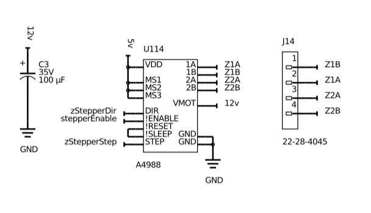
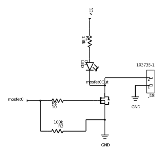

Profilometer - the circuit board March 15, 2018

I designed and ordered the circuit board for the profilometer today. The core functionality is simple—all we’re doing is driving three stepper motors off the Tinkerboard’s GPIO pins, and taking input from three corresponding endstops. This leaves us with an awful lot of spare pins, however, so I added an additional three stepper drivers and six MOSFETs, leaving four pins to spare. If I want to elaborate on this project in the future, I’ll be all set.
Stepper Drivers
The stepper drivers are A4988s, which are super common and familiar to anyone who’s ever assembled a 3D printer. They cost two or three bucks, can *theoretically* drive up to 2A with enough cooling, and are rated to 35v. They are packaged as small circuit boards with two rows of eight headers, that fit in in sockets on your board. They take input from two pins, step and direction, as well as a stepper enable pin, which can shut the whole thing off. Each pulse delivered to the step pin causes the motor to move one step. Three pins allow you to define the degree of microstepping you want—we’re using 1/16th step microstepping, which improves resolution and smoothness.
The A4988s are hooked up like this:
MOSFETs
For the MOSFETs, we’re using the PHT4NQ10LT, a surface mount SOT-23 N-Channel MOSFET capable of 100v and 3.5A. It’s a logic level device, meaning it can be driven directly off of TTL from the Tinkerboard. I found ten of these on eBay for $7. Everything in this project is surface mount, by the way—I got a hot air gun, a tube of solder paste, and a few trays of standard value resistors/capacitors/LEDs/etc in 1206 footprint a year ago, and found SMT boards to be super easy to make.
The LED here serves as a visual indicator of whether the LED is on, and R3 helps with shutoff. MOSFET gates have a certain amount of parasitic capacitance, which in some cases is enough to keep the transistor on even when the pin goes low. A high value resistor between gate and ground pulls this down.
Designing the board
I designed this board in Upverter, an online e-CAD package competitive with Eagle. It runs in a browser, and when I first encountered it a year ago, fresh off the high I’d gotten from discovering Onshape and brimming with enthusiasm for browser-based CAD, it seemed like a vastly better system. My enthusiasm is somewhat tempered now, largely by its total lack of component alignment tools and the miserable process that it is to do a pour. I might be back to Eagle before too long…
At any rate, the process of designing the board consists of creating the schematic, beginning with the ribbon cable coming in from the Tinkerboard. Add each of the pieces of functionality, and lay them out on the board as you go. When it’s all there, route, beginning with important signals traveling a long distance, moving on to power, and ending with local connections. Do a ground pour and it’s done. Export the gerbers.
Getting the board manufactured
Apparently getting PCBs made used to suck. I wouldn’t know. The best place to get simple boards made is SeeedStudio—$5 for 10x two layer boards up to 100x100mm. Plus shipping from China, but even then, the order comes in under $25. Turnaround, including shipping, is better than two weeks.
That’s all for now. I’ll put my board together when it comes, along about the beginning of April.
Files
All files associated with this project are also available on the main project page.